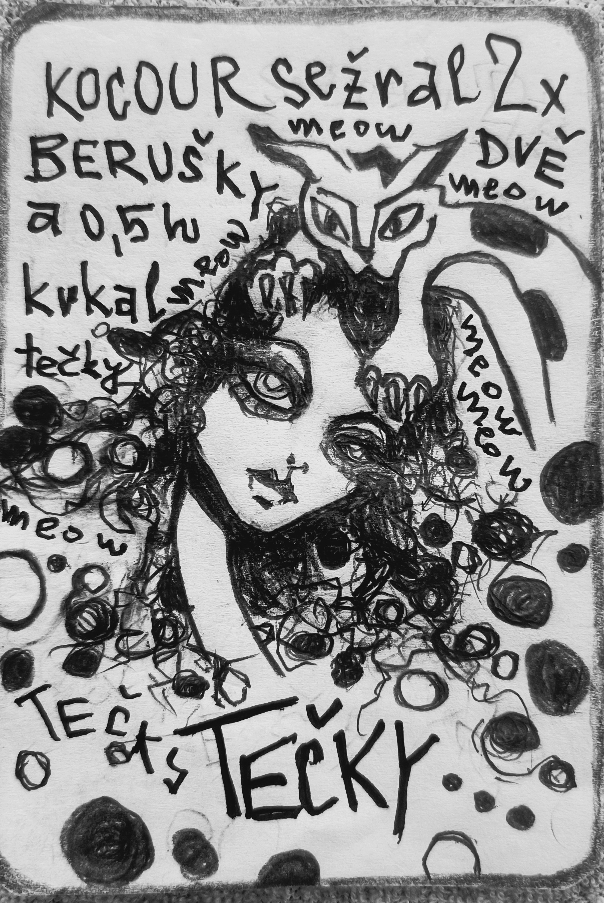

🐈⬛ Tomcat – diagnostic mode
The tyranny of premature closure in communication
🐁 Facilitator's guide (mouse)
You are the mouse. You sit, listen, and take notes. You don't judge who is right — you map how the team thinks.
Important before you start:
- Cat is not a person. It is a pattern — the way a team behaves in a given moment.
- The animals are patterns. The girl on the card is speech. The animal is the pattern. The text between them is space for interpretation.
- Angles are not personality types. The same person looks through a different angle on a different day. This is not about labelling people.
- There is no right or wrong angle. The goal is to have as many as possible — to broaden perspective.
- You assign the angles — based on what you hear. Choose intuitively, according to the core of the answer.
- The notebook saves continuously — it survives browser closure and page refresh.
The angle key is always available — expand it below whenever you need it.
📖 The tale of the tomcat

🔑 Angle key (for assignment)
Three questions for the team (Cat):
Q1 – Meaning: What do you think is the main point or message of this story?
Q2 – Engagement: Which specific sentence, image or moment caught your attention the most, and why?
Q3 – Application: If this story were a guide or piece of advice, what would it tell you to do (or not do) in your professional life?
💾 The notebook saves continuously — it survives browser closure and page refresh.
🔮 Want to generate a new workshop based on the cognitive map? Try generative mode.